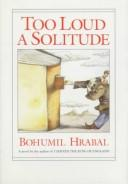
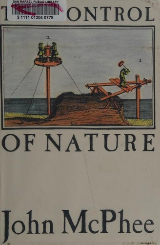
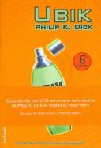
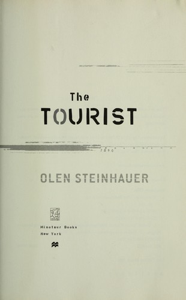
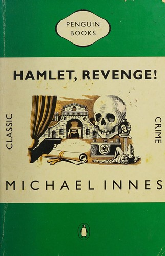

Recommendations for the week of 12 October 2026.
This week rotates the three highbrow edges away from last week's: the translated-fiction thread reaches Czechoslovakia for the first time with a cellar-bound monologue about books and the machines built to destroy them; the narrative-nonfiction pick opens a wholly fresh domain — geology and engineering — in three essays on humanity's losing wars against the earth; and the near-empty poetry shelf gains its first Hebrew voice. The comfort picks hold the three best-loved veins — big-idea SF, cold-weather espionage, Golden-Age crime — while reaching for fresh authors: a foundational reality-dissolving metaphysician, a contemporary heir to le Carré, and a donnish, Shakespeare-haunted country-house puzzle.




